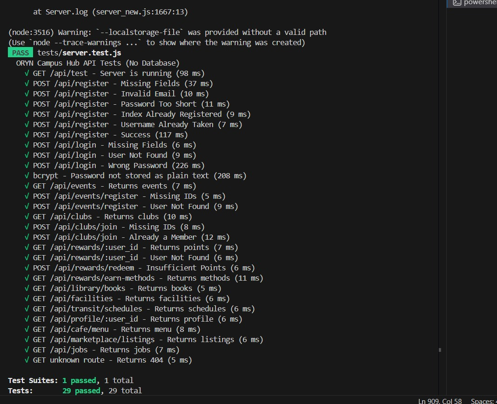

Collaborative Development
ORYN Campus Hub (On going project)
👥 Team
📋 Project Manager
Medhani Niwoda
Documentation & Coordination
⚙️ Backend Developer
Pulindu Balasooriya
Node.js / Express / API
🎨 Frontend Developer
Sanduni Priyalakshi
HTML / CSS / UI Design
🧪 QA Engineer
Dewmi Umegha ← Me
Test Plan · Jest · Cypress · Bug Reports
🗄️ Database Admin
Udara Nethmi
MySQL · Data Modeling
📊 Business Analyst
Ginuka Weragoda
Requirements Gathering
🛠️ Tech Stack
QA & Testing
Jest Unit Testing
Supertest API Integration Testing
Cypress E2E & Cross-browser Testing
Postman API Testing
Jest + mysql2 Automated DB Testing
Lighthouse Accessibility & Performance
🧪 My QA Work — Testing Evidence
I individually designed and executed all testing across the project. Below are the testing artifacts I produced as QA Engineer.
Jest Unit Tests — 29/29 Passed

Cypress E2E Tests — 17/17 Pages Passed
I wrote Cypress end-to-end tests to verify that all 17 frontend pages load correctly in a real browser environment, simulating actual student user flows.